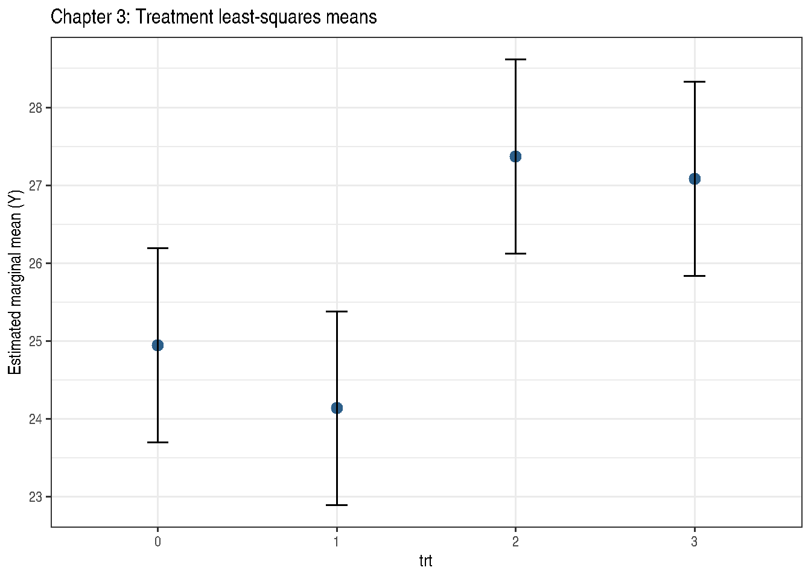

Chapter 3: Setting the Stage
LM and GLM Methods for Fixed Effects
2026-05-11
Source:vignettes/chapter-03-gaussian-glm.qmd
1 Overview
Chapter 3 covers fixed-effects analysis of designed experiments using both linear models (LM) and generalised linear models (GLM). The three datasets illustrate:
- DataSet3.1: Two-treatment comparison with Gaussian and binomial responses
- DataSet3.2: Multi-location, multi-treatment factorial
- DataSet3.3: Time-course experiment with batch effects
2 Example 3.2 — Two-Treatment Binomial GLM
The model is:
\[\text{logit}(p_i) = \mu + \tau_i, \quad i = 0, 1\]
'data.frame': 20 obs. of 5 variables:
$ trt: Factor w/ 2 levels "0","1": 1 1 1 1 1 1 1 1 1 1 ...
$ rep: int 1 2 3 4 5 6 7 8 9 10 ...
$ Y : num 7.33 11.01 8.51 13.22 9.34 ...
$ N : int 21 28 28 42 32 22 33 25 19 29 ...
$ F : int 0 5 1 5 5 0 4 3 1 5 ...
Exam3.2.glm <- stats::glm(
cbind(F, N - F) ~ trt,
family = stats::binomial(link = "logit"),
data = DataSet3.1
)
summary(Exam3.2.glm)
Call:
stats::glm(formula = cbind(F, N - F) ~ trt, family = stats::binomial(link = "logit"),
data = DataSet3.1)
Coefficients:
Estimate Std. Error z value Pr(>|z|)
(Intercept) -2.1542 0.1962 -10.981 < 2e-16 ***
trt1 1.2682 0.2339 5.422 5.9e-08 ***
---
Signif. codes: 0 '***' 0.001 '**' 0.01 '*' 0.05 '.' 0.1 ' ' 1
(Dispersion parameter for binomial family taken to be 1)
Null deviance: 56.195 on 19 degrees of freedom
Residual deviance: 23.169 on 18 degrees of freedom
AIC: 86.498
Number of Fisher Scoring iterations: 4
if (requireNamespace("parameters", quietly = TRUE)) {
parameters::model_parameters(Exam3.2.glm)
}| Parameter | Coefficient | SE | CI | CI_low | CI_high | z | df_error | p |
|---|---|---|---|---|---|---|---|---|
| (Intercept) | -2.154165 | 0.1961678 | 0.95 | -2.559677 | -1.787830 | -10.981239 | Inf | 0e+00 |
| trt1 | 1.268215 | 0.2339132 | 0.95 | 0.820860 | 1.740639 | 5.421734 | Inf | 1e-07 |
## Marginal means on probability scale
emm3.2 <- emmeans::emmeans(Exam3.2.glm, ~ trt, type = "response")
print(emm3.2) trt prob SE df asymp.LCL asymp.UCL
0 0.104 0.0183 Inf 0.0732 0.146
1 0.292 0.0263 Inf 0.2431 0.346
Confidence level used: 0.95
Intervals are back-transformed from the logit scale
emmeans::contrast(emm3.2, method = "pairwise") contrast odds.ratio SE df null z.ratio p.value
trt0 / trt1 0.281 0.0658 Inf 1 -5.422 <0.0001
Tests are performed on the log odds ratio scale
if (requireNamespace("report", quietly = TRUE)) {
tryCatch(
print(report::report(Exam3.2.glm)),
error = function(e) message("report() not supported for this model: ", conditionMessage(e))
)
}Can't calculate log-loss.`performance_pcp()` only works for models with binary response values.Can't calculate log-loss.`performance_pcp()` only works for models with binary response values.
We fitted a logistic model (estimated using ML) to predict cbind(F, N - F) with
trt (formula: cbind(F, N - F) ~ trt). The model's intercept, corresponding to
trt = 0, is at -2.15 (95% CI [-2.56, -1.79], p < .001). Within this model:
- The effect of trt [1] is statistically significant and positive (beta = 1.27,
95% CI [0.82, 1.74], p < .001; Std. beta = 1.27, 95% CI [0.82, 1.74])
Standardized parameters were obtained by fitting the model on a standardized
version of the dataset. 95% Confidence Intervals (CIs) and p-values were
computed using a Wald z-distribution approximation.3 Example 3.3 — Multi-Location Factorial
data(DataSet3.2)
DataSet3.2$loc <- factor(DataSet3.2$loc)
DataSet3.2$trt <- factor(DataSet3.2$trt)
str(DataSet3.2)'data.frame': 32 obs. of 10 variables:
$ loc : Factor w/ 8 levels "1","2","3","4",..: 1 1 1 1 2 2 2 2 3 3 ...
$ trt : Factor w/ 4 levels "0","1","2","3": 1 2 3 4 1 2 3 4 1 2 ...
$ Y : num 26 25.1 28.7 24.5 20.5 21.7 26.7 26.3 25.5 21.7 ...
$ Nbin : int 60 60 60 60 60 60 60 60 60 60 ...
$ S1 : int 0 1 10 19 12 13 31 31 11 20 ...
$ S2 : int 12 7 16 14 9 26 25 29 4 19 ...
$ count1: int 0 3 4 4 5 3 6 17 7 6 ...
$ count2: int 8 4 4 4 1 21 6 15 4 12 ...
$ A : int 0 0 1 1 0 0 1 1 0 0 ...
$ B : int 0 1 0 1 0 1 0 1 0 1 ...
Call:
stats::lm(formula = Y ~ loc + trt, data = DataSet3.2)
Residuals:
Min 1Q Median 3Q Max
-2.7750 -0.7875 0.3625 1.0813 2.3000
Coefficients:
Estimate Std. Error t value Pr(>|t|)
(Intercept) 25.1375 0.9945 25.277 < 2e-16 ***
loc2 -2.2750 1.1994 -1.897 0.07169 .
loc3 -0.7000 1.1994 -0.584 0.56568
loc4 0.6250 1.1994 0.521 0.60775
loc5 1.8000 1.1994 1.501 0.14830
loc6 0.6750 1.1994 0.563 0.57954
loc7 -2.6000 1.1994 -2.168 0.04181 *
loc8 0.9750 1.1994 0.813 0.42538
trt1 -0.8125 0.8481 -0.958 0.34895
trt2 2.4250 0.8481 2.859 0.00939 **
trt3 2.1375 0.8481 2.520 0.01988 *
---
Signif. codes: 0 '***' 0.001 '**' 0.01 '*' 0.05 '.' 0.1 ' ' 1
Residual standard error: 1.696 on 21 degrees of freedom
Multiple R-squared: 0.6818, Adjusted R-squared: 0.5303
F-statistic: 4.5 on 10 and 21 DF, p-value: 0.001795
anova(Exam3.3.lm)| Df | Sum Sq | Mean Sq | F value | Pr(>F) | |
|---|---|---|---|---|---|
| loc | 7 | 68.7250 | 9.817857 | 3.412505 | 0.0135440 |
| trt | 3 | 60.7525 | 20.250833 | 7.038813 | 0.0018727 |
| Residuals | 21 | 60.4175 | 2.877024 | NA | NA |
trt emmean SE df lower.CL upper.CL
0 24.9 0.6 21 23.7 26.2
1 24.1 0.6 21 22.9 25.4
2 27.4 0.6 21 26.1 28.6
3 27.1 0.6 21 25.8 28.3
Results are averaged over the levels of: loc
Confidence level used: 0.95
emmeans::contrast(emm3.3, method = "pairwise", adjust = "none") contrast estimate SE df t.ratio p.value
trt0 - trt1 0.812 0.848 21 0.958 0.3489
trt0 - trt2 -2.425 0.848 21 -2.859 0.0094
trt0 - trt3 -2.138 0.848 21 -2.520 0.0199
trt1 - trt2 -3.237 0.848 21 -3.817 0.0010
trt1 - trt3 -2.950 0.848 21 -3.478 0.0022
trt2 - trt3 0.287 0.848 21 0.339 0.7380
Results are averaged over the levels of: loc 3.1 Interaction plot
emm_plot3.3 <- as.data.frame(emm3.3)
ggplot(emm_plot3.3, aes(x = trt, y = emmean)) +
geom_point(size = 3, colour = "#2c5f8a") +
geom_errorbar(aes(ymin = lower.CL, ymax = upper.CL), width = 0.12) +
theme_bw() +
labs(title = "Chapter 3: Treatment least-squares means",
y = "Estimated marginal mean (Y)")
4 Example 3.5 — Factorial Treatment Structure
'data.frame': 32 obs. of 10 variables:
$ loc : Factor w/ 8 levels "1","2","3","4",..: 1 1 1 1 2 2 2 2 3 3 ...
$ trt : Factor w/ 4 levels "0","1","2","3": 1 2 3 4 1 2 3 4 1 2 ...
$ Y : num 26 25.1 28.7 24.5 20.5 21.7 26.7 26.3 25.5 21.7 ...
$ Nbin : int 60 60 60 60 60 60 60 60 60 60 ...
$ S1 : int 0 1 10 19 12 13 31 31 11 20 ...
$ S2 : int 12 7 16 14 9 26 25 29 4 19 ...
$ count1: int 0 3 4 4 5 3 6 17 7 6 ...
$ count2: int 8 4 4 4 1 21 6 15 4 12 ...
$ A : Factor w/ 2 levels "0","1": 1 1 2 2 1 1 2 2 1 1 ...
$ B : Factor w/ 2 levels "0","1": 1 2 1 2 1 2 1 2 1 2 ...
Call:
stats::lm(formula = Y ~ A * B + loc, data = DataSet3.2)
Residuals:
Min 1Q Median 3Q Max
-2.7750 -0.7875 0.3625 1.0813 2.3000
Coefficients:
Estimate Std. Error t value Pr(>|t|)
(Intercept) 25.1375 0.9945 25.277 < 2e-16 ***
A1 2.4250 0.8481 2.859 0.00939 **
B1 -0.8125 0.8481 -0.958 0.34895
loc2 -2.2750 1.1994 -1.897 0.07169 .
loc3 -0.7000 1.1994 -0.584 0.56568
loc4 0.6250 1.1994 0.521 0.60775
loc5 1.8000 1.1994 1.501 0.14830
loc6 0.6750 1.1994 0.563 0.57954
loc7 -2.6000 1.1994 -2.168 0.04181 *
loc8 0.9750 1.1994 0.813 0.42538
A1:B1 0.5250 1.1994 0.438 0.66605
---
Signif. codes: 0 '***' 0.001 '**' 0.01 '*' 0.05 '.' 0.1 ' ' 1
Residual standard error: 1.696 on 21 degrees of freedom
Multiple R-squared: 0.6818, Adjusted R-squared: 0.5303
F-statistic: 4.5 on 10 and 21 DF, p-value: 0.001795
anova(Exam3.5.lm)| Df | Sum Sq | Mean Sq | F value | Pr(>F) | |
|---|---|---|---|---|---|
| A | 1 | 57.78125 | 57.781250 | 20.0836885 | 0.0002055 |
| B | 1 | 2.42000 | 2.420000 | 0.8411470 | 0.3694824 |
| loc | 7 | 68.72500 | 9.817857 | 3.4125047 | 0.0135440 |
| A:B | 1 | 0.55125 | 0.551250 | 0.1916043 | 0.6660538 |
| Residuals | 21 | 60.41750 | 2.877024 | NA | NA |
A B emmean SE df lower.CL upper.CL
0 0 24.9 0.6 21 23.7 26.2
1 0 27.4 0.6 21 26.1 28.6
0 1 24.1 0.6 21 22.9 25.4
1 1 27.1 0.6 21 25.8 28.3
Results are averaged over the levels of: loc
Confidence level used: 0.95 B = 0:
contrast estimate SE df t.ratio p.value
A0 - A1 -2.42 0.848 21 -2.859 0.0094
B = 1:
contrast estimate SE df t.ratio p.value
A0 - A1 -2.95 0.848 21 -3.478 0.0022
Results are averaged over the levels of: loc A = 0:
contrast estimate SE df t.ratio p.value
B0 - B1 0.812 0.848 21 0.958 0.3489
A = 1:
contrast estimate SE df t.ratio p.value
B0 - B1 0.287 0.848 21 0.339 0.7380
Results are averaged over the levels of: loc 5 Key Takeaways
- Use the binomial-count response
cbind(successes, failures)when the book model is binomial with known denominators. -
emmeansprovides estimated marginal means with proper standard errors accounting for the design structure. - Interactions between treatment and location/batch should always be tested before interpreting main effects.
6 References
Stroup, W. W., Ptukhina, M., and Garai, S. (2024). Generalized Linear Mixed Models: Modern Concepts, Methods and Applications (2nd ed.). CRC Press.